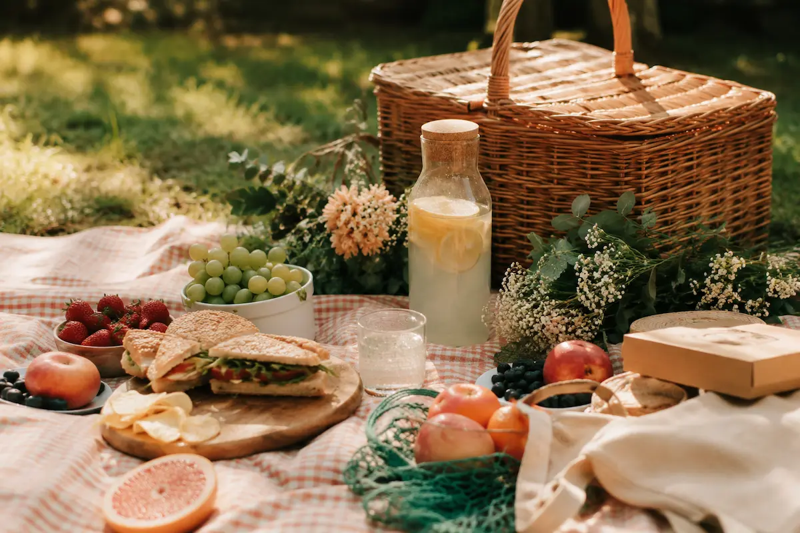

Planejando um Piquenique?
Preparar o piquenique perfeito é mais fácil do que você imagina! Confira nossas dicas essenciais de alimentos, utensílios e tudo o que você precisa pra aproveitar momentos deliciosos ao ar livre, sem deixar nada de fora.
Alimentos
- Sanduíches ou wraps: fáceis de comer e transportar.
- Frutas frescas: como uvas, maçãs, morangos ou fatias de melancia.
- Queijos e frios: queijo brie, gouda, presunto ou salame.
- Snacks: mix de castanhas, biscoitos salgados, palitinhos de cenoura ou pepino.
- Pães: baguetes ou pães de forma pra acompanhar os queijos e frios.
- Saladas leves: como salada caprese (tomate, mussarela e manjericão) ou salada de frutas.
- Bebidas: sucos, água, chá gelado ou vinho (não esqueça o abridor de garrafas).
- Sobremesas: brownies, cookies ou cupcakes.
Utensílios
- Toalha de piquenique: grande o suficiente pra todo mundo se sentar.
- Talheres, pratos e copos: preferencialmente reutilizáveis.
- Guardanapos ou toalhas de papel.
- Abridor de garrafas e saca-rolhas.
- Recipientes herméticos: pra evitar vazamentos.
Extras
- Repelente de insetos e protetor solar.
- Saco pra lixo: pra deixar o local limpo depois do piquenique.
- Almofadas: pra mais conforto.
- Jogos ou atividades: como cartas ou bolas.
Lembre-se de verificar as condições do tempo e a localização pra garantir que o piquenique seja confortável e agradável!
Veja também: Como Organizar sua Despensa e Geladeira